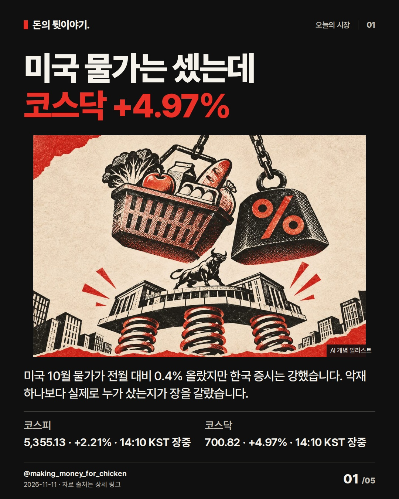
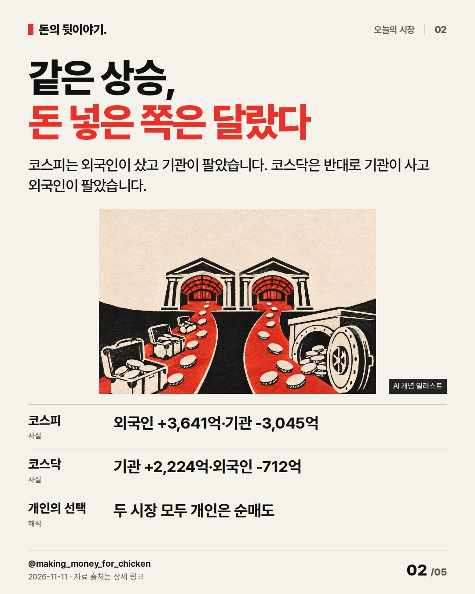
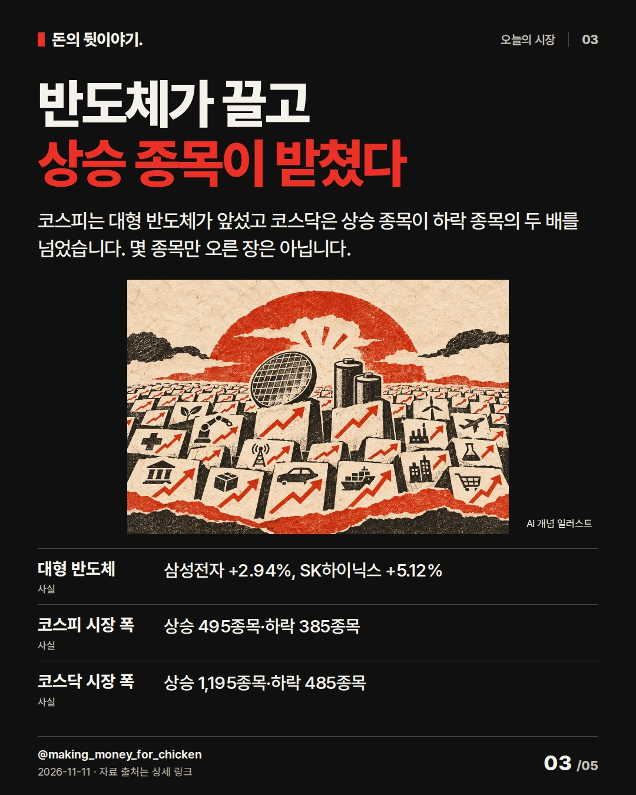
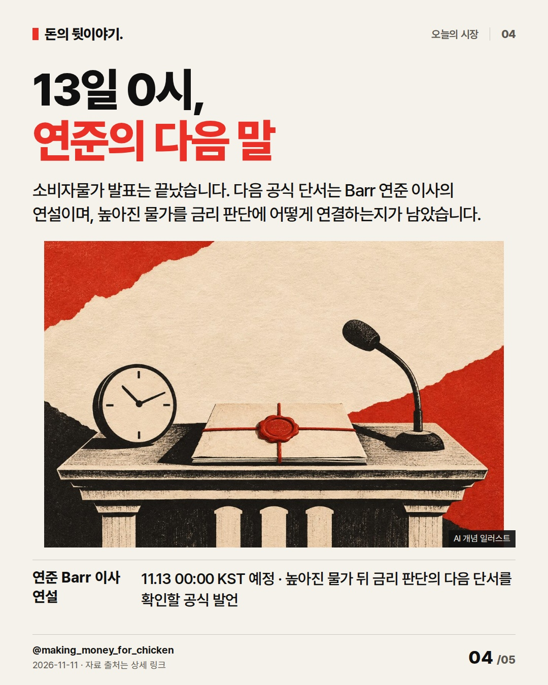
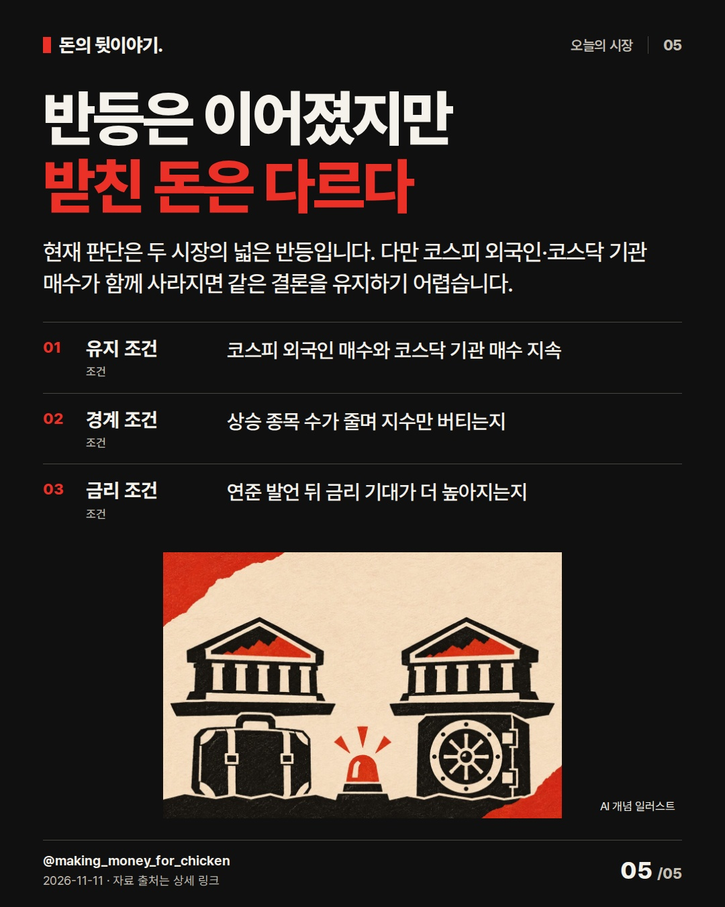

미국 물가는 셌는데
코스닥 +4.97%
미국 물가가 예상을 웃돌았는데도 두 시장은 올랐습니다. 같은 상승 안에서 코스피는 외국인, 코스닥은 기관이 돈을 넣었다는 차이가 더 중요합니다. #코스피 #코스닥 #수급
미국 물가는 셌는데
코스닥 +4.97%

미국 10월 물가가 전월 대비 0.4% 올랐지만 한국 증시는 강했습니다. 악재 하나보다 실제로 누가 샀는지가 장을 갈랐습니다.
- 코스피: 5,355.13 · +2.21% · 14:10 KST 장중
- 코스닥: 700.82 · +4.97% · 14:10 KST 장중
AI 생성 개념 일러스트 · 실제 현장이나 공식 제품 사진이 아닙니다.같은 상승,
돈 넣은 쪽은 달랐다

코스피는 외국인이 샀고 기관이 팔았습니다. 코스닥은 반대로 기관이 사고 외국인이 팔았습니다.
- 코스피: 외국인 +3,641억·기관 -3,045억
- 코스닥: 기관 +2,224억·외국인 -712억
- 개인의 선택: 두 시장 모두 개인은 순매도
AI 생성 개념 일러스트 · 실제 현장이나 공식 제품 사진이 아닙니다.반도체가 끌고
상승 종목이 받쳤다

코스피는 대형 반도체가 앞섰고 코스닥은 상승 종목이 하락 종목의 두 배를 넘었습니다. 몇 종목만 오른 장은 아닙니다.
- 대형 반도체: 삼성전자 +2.94%, SK하이닉스 +5.12%
- 코스피 시장 폭: 상승 495종목·하락 385종목
- 코스닥 시장 폭: 상승 1,195종목·하락 485종목
AI 생성 개념 일러스트 · 실제 현장이나 공식 제품 사진이 아닙니다.13일 0시,
연준의 다음 말

소비자물가 발표는 끝났습니다. 다음 공식 단서는 Barr 연준 이사의 연설이며, 높아진 물가를 금리 판단에 어떻게 연결하는지가 남았습니다.
- 연준 Barr 이사 연설: 11.13 00:00 KST 예정 · 높아진 물가 뒤 금리 판단의 다음 단서를 확인할 공식 발언
AI 생성 개념 일러스트 · 실제 현장이나 공식 제품 사진이 아닙니다.반등은 이어졌지만
받친 돈은 다르다

현재 판단은 두 시장의 넓은 반등입니다. 다만 코스피 외국인·코스닥 기관 매수가 함께 사라지면 같은 결론을 유지하기 어렵습니다.
- 유지 조건: 코스피 외국인 매수와 코스닥 기관 매수 지속
- 경계 조건: 상승 종목 수가 줄며 지수만 버티는지
- 금리 조건: 연준 발언 뒤 금리 기대가 더 높아지는지
AI 생성 개념 일러스트 · 실제 현장이나 공식 제품 사진이 아닙니다.자료 출처
- 네이버 금융 · 코스피 실시간 지수 · 2026-11-11 14:10 KST; 5,355.13, 전일 5,239.13 대비 +2.21% · 조회 2026-11-11T14:11:00+09:00
- 네이버 금융 · 코스닥 실시간 지수 · 2026-11-11 14:10 KST; 700.82, 전일 667.61 대비 +4.97% · 조회 2026-11-11T14:11:00+09:00
- 네이버 금융 · 코스피 장중 수급·시장 폭 · 2026-11-11 14:10 확인; 외국인 +3,641억, 상승 495·하락 385 · 조회 2026-11-11T14:11:00+09:00
- 네이버 금융 · 코스닥 장중 수급·시장 폭 · 2026-11-11 14:10 확인; 기관 +2,224억, 상승 1,195·하락 485 · 조회 2026-11-11T14:11:00+09:00
- 글로벌이코노믹 · 코스피 5300선 회복·코스닥 강세 · 2026-11-11 12:57 KST; 반도체 강세와 코스닥 상승 종목 우위 · 조회 2026-11-11T14:08:00+09:00
- 미국 노동통계국 · 2026년 10월 소비자물가 · 2026-11-10 08:30 EST; 전월 대비 전체 +0.4%, 근원 +0.3% · 조회 2026-11-11T14:09:00+09:00
- 미국 연방준비제도 · 2026년 11월 일정 · 2026-11-12 10:00 EST; Michael S. Barr 이사 연설 · 조회 2026-11-11T14:09:00+09:00
- 불스토리 · 국장 반등의 열쇠는 손바뀜 (편집 참고) · 공식 사이트 본문·이미지 설명·체크 조건 열람; Instagram 카드 미열람 · 조회 2026-11-11T14:08:30+09:00
- KBS 성공예감 · 홍춘욱 대표 공개 인터뷰 전사 (편집 참고) · KBS 공개 전사 본문 열람; 수급과 변동성 설명 순서만 참고 · 조회 2026-11-11T14:08:30+09:00
- Morning Brew · Having reservations (편집 참고) · 2026-11-09 공개 이슈의 시장·CPI 공개 본문 구간 확인; 카드 형식 아님 · 조회 2026-11-11T14:09:30+09:00
- CNBC Daily Open · The AI bulls are back (편집 참고) · 2026-11-09 공개 뉴스레터 본문 확인; Instagram 카드 미열람 · 조회 2026-11-11T14:09:30+09:00
편집 기록
{
"improvement": "최근 5편은 변동성·사이드카·반등 결론을 되풀이했습니다. 이번에는 같은 상승 안에서도 코스피는 외국인, 코스닥은 기관이 돈을 넣었다는 차이를 한 축으로 삼고 장마다 새 근거를 더했습니다.",
"reason": "불스토리 공식 사이트 글은 본문·이미지 설명·체크 조건을 읽었고 Instagram 카드는 보지 못했습니다. 홍춘욱 KBS 공개 전사는 수급을 투자자의 실제 선택과 연결하는 순서를 참고했습니다. Morning Brew 공개 이슈와 CNBC 공개 뉴스레터는 악재와 시장 반응을 한 문단 안에서 대비하는 방식을 확인했습니다.",
"application": "초안 ‘미국 물가에도 증시 강세’→퇴고 ‘미국 물가는 셌는데 코스닥 +4.97%’. 2장에서 누가 돈을 넣었는지 시장별로 갈랐고, 3장에서 반도체 수익률과 상승 종목 수를 보태 몇 종목만 오른 장이 아님을 설명했습니다.",
"avoided_repetition": "전날 사이드카 정의와 ‘반등 지속 확인’ 문장을 버렸습니다. 지수·수급·시장 폭을 같은 장에서 반복하지 않고 각 장의 새 근거로 분리했습니다. 다음 편은 장 마감 뒤 외국인·기관 매수가 남았는지와 상승 종목 수를 함께 비교합니다. 반응 지표는 미확보입니다."
}투자 참고용 · 매수·매도 권유 아님.